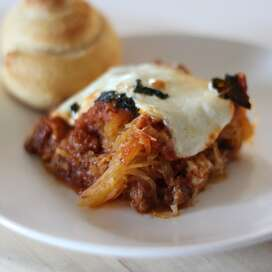

Lasanga

Why Lasanga?
Lasanga is a very easy dish to make. Have you made spaghetti? Then you can makes
lasanga. There are three ingredients you need; meat, cheese, and pasta
. Well, maybe a little more, but just stack those and bake. Pretty easy.
Ingredients
- 16 oz of Tomato Sauce
- 16 oz of Cooked Ground Beef
- 16 oz of Lasanga Noodles
- 8 oz of Shredded Mozzarella
- 8 oz of Ricotta Cheese
- 1 Egg
- 4 oz of Parmesean Cheese
Steps
- Mix the ground beef with tomato sauce in a bot. Let simmer.
- In another pot, boil noodles until al dente. (This means "to the tooth", which mean firm to bite)
- In a baking dish, layer a small amount of the sauce / meat mixture thinly on the bottom of the dish.
- Place a layer of the cooked lasanga noodles on the sauce in the baking dish.
- The next layer is a mix of ricotta and mozzarella cheese. Repeat the layering process.
- Top the dish with mozzarella and parmesean cheese. Bake in the over for 25 minutes at 375F Degrees.
- Let it rest outside of the oven, covered for 15 minutes before serving.